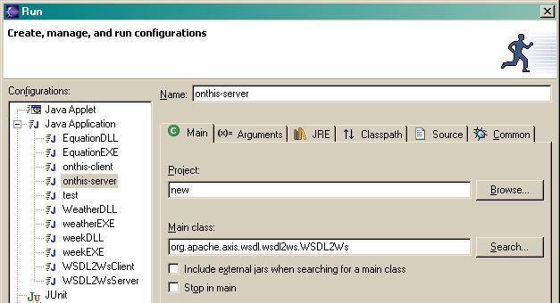
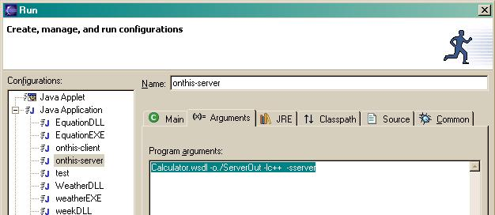
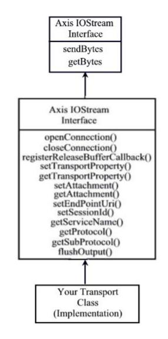
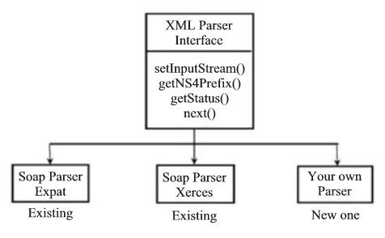

Axis C++ Windows Developers Guide
Building and Deploying Axis C++
Getting a cvs checkout
Getting necessary third party software
Installing Apache and Xerces
Setting up the build environment and building Axis
Deploying Axis in Apache
Deploying a web service in Axis C++
Generating Serverside Skeletons/ wrappers and client side stubs
Using eclipse to build and run WSDL2Ws
Building and running WSDL2Ws on the command line
Building and Deploying the web service
Building and deploying the provided interop web services samples
Building and deploying the provided interop client applications
Consuming the web service with Axis C++ client
Coding and Running the client
Creating and Building your own transport layer
Creating and Building your own parser
Before going through this guide, please go through the Windows User Guide and also be familiar with how to use binaries.
*Note:The Expat XML Parser module is not currently maintained and also contains some bugs. So it is removed from the 1.5 release.
Axis C++
Getting a cvs checkout
Visit http://ws.apache.org/ Click on “axis” and then on “CVS Repository” to find details on how to access the CVS Repository. It will have instructions similar to the following.
“Anyone can checkout the source code from our anonymous CVS server. To do so, simply use the following commands (if you are using a GUI CVS client, configure it appropriately):
cvs -d :pserver:anoncvs@cvs.apache.org:/home/cvspublic login
password: anoncvs
cvs -d :pserver:anoncvs@cvs.apache.org:/home/cvspublic checkout ws-axis
The examples given below are based on these lines of instructions.
To use the command line cvs client go to http://www.cvshome.org, click on the "CVS Downloads" link.In the resulting page under the heading "CVS downloads",there will be a link named "historical download pages", where you can download the cvs binaries for Windows. Download the Windows cvs binaries. Extract the cvs binaries from the downloaded zip file.When this is extracted there will be a “cvs.exe” file . Set the PATH environment variable to “cvs.exe”
You would have to do the following to get a checkout from the command line cvs client.
cvs -d :pserver:anoncvs@cvs.apache.org:/home/cvspublic login
Now you will be prompted for the password. Enter the password.
password: anoncvs
Now enter the following cvs command to checkout the axis Repository.
cvs -d :pserver:anoncvs@cvs.apache.org:/home/cvspublic checkout ws-axis
The checkout of the repository will be created in the current directory in a folder named “ws-axis”
The checked out folder ws-axis will be referred to as [Checkout_Folder] from this point on.
Getting necessary third party software
Xerces XML Parser
Axis Cpp Developers can use Xerces-c XML Parser to build the Axis Cpp. The Source in CVS supports Xerces out of the box.
Apache Web Server
Download the Apache web server from www.apache.org. Currently Axis supports apache 1.3.x and 2.X. This documentation was tested with Apache 1.3.28 and Apache 2.0.44.
Installing Apache and Xerces
Xerces
Run the file xerces-c2_2_0-win32.The folder to which Xerces is unzipped will be referred to as [Xerces_Folder] from this point onwards.
Apache
Install the Apache web server. By default Apache 1.3.X is installed in "C:\Program Files\Apache Group\Apache" and Apache 2.X in "C:\Program Files\Apache Group\Apache2". These locations will be referred to as [Apache_Folder] from this point onwards.
Setting up the build environment and building Axis
For Xerces Parser
1) Copy [Xerces_Folder]\lib\xerces-c_2.lib to [Checkout_Folder]\c\lib\xerces\ directory.
2) Copy [Xerces_Folder]\include\xercesc to [Checkout_Folder]\c\include\xerces\ directory.
For apache 1.3.X:
1) Copy the include files in "[Apache_Folder]\include" directory to "[Checkout_Folder]\c\include\apache1_3\"
2) Copy the ApacheCore.lib file from [Apache_Folder]\libexec to [Checkout_Folder]\c\lib\apache1_3.
For apache 2.X:
1) Copy the include files in "[Apache_Folder]\include" directory to "[Checkout_Folder]\c\include\apache2_0\"
2) Copy the following lib files libapr.lib, libhttpd.lib files from "[Apache_Folder]\lib" to "[Checkout_Folder]\c\lib\apache2_0".
Building the AxisServer and AxisClient dlls
Build the AxisServer and AxisClient projects.(Click on file in Visual C++ ,open Visual C++ Distribution workspace (Distribution.dsw) at [Checkout_Folder]\c\vc\. In the workspace window, File View, right click on the AxisServer project and AxisClient project ).Which will build the AxisServer.dll and AxisClient.dll
Building Apache Modules (Apache 1.3.X and Apache 2.X)
In Visual C++ (The version used for this documentation was Visual C++ 6.0) click on file ,open Visual C++ Distribution workspace (Distribution.dsw) at [Checkout_Folder]\c\vc\. In the workspace window, File View, right click on either the project "Apache1_3Module files" or "Apache2_0Module files" and click on the "Set as Active Project" to make it the Active Project.
Again in Visual C++ right click on either the project "Apache1_3Module" or "Apache2_0Module" in the workspace window, File View, and then click on Settings in the popup menu. Select the link tab. Select General from the Category drop down list. In the Output file name text box put the value [Checkout_Folder]\modules\mod_axis.dll and click OK.(To build a Apache Module, AxisServer.lib should be in the settings Link tab )
Build either Apache1_3Module or Apache2_0Module project. In Visual C++ right click on either the project "Apache1_3Module" or "Apache2_0Module" in the workspace window, File View and click "build (selection only)" to build mod_axis.dll for Apache1_3Module or mod_axis2.dll for Apache2_0Module.
(From here onwards we refer to these modules as Apache_Module. Replace it with the correct module for the Apache server version that you have installed). Then build SimpleAxisServer.
Axis HTTPTransport Library and Axis HTTPChannel Library
In VC++ Axis3 workspace build AxisHTTPTransport project and in HTTPChannel workspace build AxisHTTPChannel project.Then HTTPTransport.dll and HTTPChannel.dll will be built.
Xerces Parser Library
In VC++ distribution workspace build AxisXMLParserXerces project.Then AxisXMLParser.dll will be built.
Building HTTPTransport.dll,HTTPChannel.dll and AxisXMLParser.dll
Build the AxisHTTPTransport project AxisHTTPChannel project, and AxisXMLParser project. Which will build the HTTPTransport.dll ,HTTPChannel.dll and AxisXMLParser.dll in [Checkout_Folder]\c\bin.
(When the projects are built in Debug mode then the Dlls will appear as AxisTransport_D and AxisXMLParser_D.dll)
Deploying Axis in Apache
1) Create a directory structure called "Axis" inside [Apache_Folder] as follows.
(Instead, you can copy the folder [Checkout_Folder]\c\deploy to [Apache_Folder] and rename it to "Axis" and you will find some of the files that you are asked to create in this guide, already existing in that folder)
Axis
|__ lib (Copy [Xerces_Folder]\bin\xerces-c_2_2_0.dll and paste it inside)
|__ logs (log files are located here)
|__ conf (server.wsdd file is located here)
|__ webservices (The place to put webservice dlls)
|__ wsdls (wsdl files of the deployed web services are located here)
2) Set an environment variable named AXISCPP_DEPLOY and give [Apache_Folder]\Axis as the value.
i)You will find AxisServer.dll and Apache_Module in [Checkout_Folder]\c\bin directory.
ii)Copy Apache_Module to [Apache_Folder]\modules directory of your apache installation.
Copy AxisServer.dll ,HTTPTransport.dll,HTTPChannel.dll and AxisXMLParser.dll to [AXISCPP_DEPLOY]\lib\ directory and add that directory to your PATH environment variable.Or to any location specified by your PATH environment variable.
3) Set the "PATH" environment variable to the following directories.
[Apache_Folder]
[Apache_Folder]\Axis\lib
4) Include the following lines at the bottom of the apache configuration file [Apache_Folder]\conf\httpd.conf
LoadModule axis_module modules/Apache_Module
<Location /axis>
SetHandler axis
</Location>
5) Create a file in [Apache_Folder]\Axis named "axiscpp.conf" which should contain the following lines.
LogPath:XXXX
WSDDFilePath:YYYY
XMLParser:ZZZZ
Transport_http:AAAA
Channel_HTTP:BBBB
XXXX is the path to a file named AxisLog (The log file)and YYYY is the path to the server.wsdd file.ZZZZ is the path to AxisTransport.dll if it's a HTTP(if the selected transport is SMTP then should give that path.)WWWW is the path to AxisXMLParser.dll. AAAA is the path to the used Transport and BBBB is the path to the Channel used
i.e.
LogPath:[Apache_Folder]\Axis\logs\AxisLog.log
WSDDFilePath:[Apache_Folder]\Axis\conf\server.wsdd
Transport_http:[Apache_Folder]\Axis\lib\HTTPTransport.dll
Channel_HTTP:[Apache_Folder]\Axis\lib\HTTPChannel.dll
XMLParser:[Apache_Folder]\Axis\lib\AxisXMLParser.dll
Note:If the HTTPTransport.dll, HTTPChannel.dll and AxisXMLParser.dll paths are not given in axiscpp.conf then the hardcoded values will be used.For that set the path of these two in the PATH environment variable or copy them to the same location as the Client.exe.
Note:Make sure that xerces-c_2_2_0.dll ([Xerces_Folder]\bin) is pasted in %AXISCPP_DEPLOY%/lib/
6) Select start->programs->Apache HTTP server->Control Apache Server->stop to stop the apache server
(This is because apache will be started automatically by the installation program)
Open up a DOS terminal and give the command "apache -k start" to start apache (If Apache 2.0 server does not respond when started this way, try "apache -X").
open a browser and verify whether you can browse http://localhost/ (or give the machines ip as http://xxx.xxx.xxx.xxx/). If apache is running you will see the Apache start page in the browser.
Deploying a web service in Axis C++
Generating Serverside Skeletons/ wrappers and client side stubs
Using eclipse to build and run WSDL2Ws
In the checked out source code there is a "wsdl2ws" (i.e. wsdl-to-web services) written in java that generates server side Skeletons/wrappers and client side stubs using a given WSDL file. This Section describes how this is done.
To build and run the java tool this section uses the eclipse platform. For this documentation eclipse 2.1.0 was used and the jdk version used was j2sdk1.4.1_01. You will not be able to build the java tool with jdk versions below 1.4.0.
1) Start the eclipse platform IDE.
Go to File->New->Project.
Select java in the "New Project" dialog and click "Next".
In the "New" dialog that appears give a project Name (e.g. test). In the "New dialog" keep the "use default" Tick Box checked.
Note down the path in the "Directory" Text Box. This location will be referred to as [Skelstub_Folder] from this point onwards. Click "Next".
Another dialog named "New” will appear. Select the “Source” tab. Select the project that you created (i.e. test).
Click on “Add Folder…”. In the “Source Folder Selection” dialog that appears select the project that you created (i.e. test) and click “Create New Folder…”. In the “New Folder” dialog that appears give a folder name as “src” and click “OK”. Click “OK” in the “Source Folder Selection” dialog. Click “Yes” on the confirmation message box that pops up.
Click “Libraries” in the “New” dialog. Click “Add External JARs…”. In the “JAR Selection” dialog that appears browse to the location where the latest jars are and select the following JARs.
Note: The latest jars are in http://apache.towardex.com/ws/axis/1_2beta/
axis.jar
commons-discovery.jar
commons-logging.jar
jaxrpc.jar
saaj.jar
wsdl4j.jar
xml-apis.jar
Click “Open”.
Click “Finish” on the “New” dialog.
2) Copy the “org” folder inside [Checkout_Folder]\c\src\wsdl to [Skelstub_Folder]\src. The “org” folder contains the package structure for the WSDL2Ws java tool.
3) Go to eclipse and right click on the “Package Explorer” window and click on “Refresh” in the popup menu that appears. Now you should be able to see the source that was copied, in the “Package Explorer” window. By now eclipse would have built the WSDL2Ws tool.
For this demonstration we will use a Calculator web service and the WSDL file the web service is located at [Checkout_Folder]\c\samples\server\simple.
Copy the Calculator.wsdl to [Skelstub_Folder]
In eclipse go to “Run->Run…”.
In the Java Application item select the New_Configuration.Then select the “Main” tab. In “Project” text box give the name of the project you created (i.e. test).
In the “Main Class” text box give the class as “org.apache.axis.wsdl.wsdl2ws.WSDL2Ws”.

Select the “Arguments” tab.
In the “Program Arguments” text box give the following argument.
“Calculator.wsdl -o./ServerOut -lc++ -sserver”.

NOTE: These are the arguments for the java tool WSDL2Ws. The usage of the WSDL2Ws is as follows.
Java org.apache.axis.wsdl.wsdl2ws.WSDL2Ws <wsdl file> -o<output directory>
-l<c|c++> -s<(server|client)>.
Also note that there cannot be any spaces after a switch (i.e. -o, -l).
Click “Run”.
Now the Skeletons/Wrappers will be generated and you will see messages in the eclipse console displaying the generated files. The generated Skeletons/Wrappers will be created in a folder named [Skelstub_Folder]\ServerOut as given in the arguments when you run the tool.
Similarly to generate the client stubs use the following arguments in eclipse and run.
“Calculator.wsdl -o./ClientOut -lc++ -sclient”.
The generated Stubs will be created in a folder named [Skelstub_Folder]\ClientOut.
Building and running WSDL2Ws on the command line
To build the WSDL2Ws java tool on the command line you require jdk1.4 or above.
To build WSDL2Ws java tool set the CLASSPATH Environment Variable to point to the following jar files.Create a New Folder called wsdl2wsTool\lib and put the above mentioned jars in it. You can find the latest jars in http://apache.towardex.com/ws/axis/1_2beta/
axis.jar
commons-discovery.jar
commons-logging.jar
jaxrpc.jar
saaj.jar
wsdl4j.jar
xml-apis.jar
Open a command window.
Change directory to [Checkout_Folder]\c\src\wsdl.
We will refer to this directory as [Skelstub_Folder] as we did during generating Skeletons/Wrappers and Stubs with eclipse.
Run the following command to build the java tool.
javac -sourcepath . org\apache\axis\wsdl\wsdl2ws\*.java
NOTE: Notice the spaces between the "dot" after the -sourcepath switch
If the command finishes without any output then the java tool has been built.
Now copy the Calculator.wsdl file in [Checkout_Folder]\c\samples\server\simple, which we use in this example to [Skelstub_Folder]
Now run the following command to generate the server side skeletons and wrappers in the same [Skelstub_Folder].
Java -classpath .;%classpath% org.apache.axis.wsdl.wsdl2ws.WSDL2Ws Calculator.wsdl -o./ServerOut -lc++ -sserver
Give the class path exactly the same order as given above.
If the tool is successful it will display the files it has generated. The skeletons and stubs will be generated in [Skelstub_Folder]\ServerOut.
Run the following command to generate the client stubs.
Java -classpath .;%classpath% org.apache.axis.wsdl.wsdl2ws.WSDL2Ws Calculator.wsdl -o./ClientOut -lc++ -sclient
The generated client stubs will be in [Skelstub_Folder]\ClientOut
Building and Deploying the web service
1) If you have followed the above instructions correctly you would have been able to generate the Server side Skeletons and Wrappers for the Calculator.wsdl
2) Start Visual C++.
3) Go to File->New…
4) Select the “Projects” tab.
5) Select “Win 32 Dynamic-Link Library”.
6) Give a project name (e.g. ws1), give a folder (say "deployws") as the "location" of the project, select the "create new workspace" radio button, and click “OK”.When this procedure is followed the "ws1" project files are created in a folder named "ws1" inside the "deployws" folder.
7) In the dialog that appears select “An empty DLL project” click “Finish” and then “OK”.
8) Right click on the project that you created (i.e. ws1) and click “Add Files to Project…” on the menu that appears. In the “Insert Files into Project” dialog select the generated .cpp and .h files in [Skelstub_Folder]\ServerOut and click “OK”.
9) Right click on the project (i.e. ws1)again and click on “Settings…” on the menu that appears. Click the C/C++ tab and select “Preprocessor” from the “Category” Drop down list. Add Axis include directory [Checkout_Folder]c\include\ to the project In the “Additional include directories”
10) Now add the business logic to the generated Skeletons. The Skeletons in this case are Calculator.h and Calculator.cpp
11) We will implement two methods that are in Calculator.cpp as follows.
int Calculator::add(int Value0, int Value1)
{
return Value0+Value1; //business logic
}
int Calculator::subtract(int Value0, int Value1)
{
return Value0-Value1; //business logic
}
12) Right click on the project (i.e. ws1) and click “Build” on the menu that appears. Visual C++ should be able to build the project without any errors now.
13) The ws1.dll will be built in "ws1\Debug" by Visual C++
14) Place the built ws1.dll file in [Apache_Folder]\Axis\webservices
15) In addition to this create server.wsdd file in [Apache_Folder]\Axis\conf
The server.wsdd file for this example is given below
<deployment>
<service name="Calculator">
<parameter name="className"
value="[APACHE_HOME]\Axis\webservices\ws1.dll"/>
<parameter name="allowedMethods" value="subtract add "/>
</service>
</deployment>
In this file [Apache_Folder] has to be replaced with the actual value of [Apache_Folder] (i.e. In this case "C:\Program Files\Apache Group\Apache" for apache 1.3.x and "C:\Program Files\Apache Group\Apache2" for apache 2.x)
Description of the server.wsdd file
The service element specifies the service name.
<service name="Calculator">
In this parameter element we specify the parameter className and for it’s value we specify the location of the webservice dll.
<parameter name="className" value="C:\Program Files\Apache Group\Apache\Axis\webservices\ws1.dll"/>
In this parameter element we specify the parameter allowedMethods and for its value we specify the methods exposed by the web service (i.e. subtract and add).
Note: A trailing space should be inserted after every allowed method.
<parameter name="allowedMethods" value="subtract add "/>
16) Now start the Apache web server by typing “apache -k start”. If the Apache server is running type “apache -k restart”
17) Now type http://localhost/axis/ in a browser and you will see the “Welcome to Axis C++” page with a listing of deployed services and Calculator service .
Consuming the web service with Axis c++ client
Coding and Running the client
1) If you have followed the above instructions you would have been able to generate the Server side Skeletons and Wrappers for the Calculator.wsdl.
2) Start Visual C++.
3) Go to File->New…
4) Select the “Projects” tab
5) Select “Win 32 Console Application”
6) Give a project name (e.g. calclient) and click “OK”. Give a project name (e.g. calclient), give a folder ( For e.g: "wsclient") as the "location" of the project, select the "create new workspace" radio button, and click “OK”.When this procedure is followed the "calclient" project files are created in a folder named "calclient" inside the "wsclient" folder.
7) In the dialog that appears select “An empty project” click “Finish” and then “OK”.
8) Right click on the project that you created (i.e. ws1) and click “Add Files to Project…” on the menu that appears.Then Add the generated .cpp and .h files from the [Skelstub_Folder]\ClientOut to the project and click “OK”.
9) Right click on the project (i.e. calclient) again and click on “Settings…” on the menu that appears. Click the “C/C++” tab and select “Preprocessor” from the “Category” Drop down list.
In the “Additional include directories” give [Checkout_Folder]c\include as the include path.
10) Click the “Link” tab and select “Input” from the “Category” Drop down list.
Add AxisClient.lib to the “Object/library modules” and in the “Additional library path” give the path. AxisClient.lib can be found in [Checkout_Folder]\c\bin once you build the AxisClient and AxisXMLParserXerces projects of the "Distribution" VC workspace and build AxisHTTPTransport project and AxisHTTPChannel project in VC++ Axis3 workspace and HTTPChannel workspace.
Now the client should be coded. Basically this will be a main method. We will write the main method in the file Calculator.cpp of the VC project "calclient". This is the stub generated by the java tool in the stub generation step.
Add the following main method to Calculator.cpp
void main()
{
Calculator cal;
int result = cal.add(22, 33);
printf("The result is : %d", result);
}
It is better to have the path to your AxisXMLParser.dll , HTTPTransport.dll and HTTPChannel.dll in axiscpp.conf or have the dlls where the client exe is.
Right click on the project and click “Build” on the menu that appears.
When the XMLParser is running these steps would occur.
1. Locate Parser dll.
2. Create Parser instance by CreateInstance() method.
3. Give the stream to parser by setInputStream() method.
4. Call next() method multiple times.
5. getStatus() to see if the streams are properly passed.
6. Destroy parser object by DestroyInstance().
If Visual C++ complains about missing libs go to Build->Rebuild All (Please make sure that the apache server is stopped). Now the client exe is built.
Start the Apache server by typing apache -k start and run the exe from Visual C++ by going to Build->Execute calclient.exe. If all goes well, now you would see the SOAP Request, SOAP Response and the result printed by calclient.exe.
Building and deploying the provided samples of interop web services
1) Open the Visual C++ workspace (interoptests.dsw) at [Checkout_Folder]\c\vc\samples\server\interoptests\ and do a batch build of all projects.
2) You will find the built dynamic libraries at [Checkout_Folder]\c\bin directory. Following are the built DLLs.
base.dll
cbase.dll
cGroupB.dll
doclitbase.dll
doclitgroupB.dll
groupB.dll
3) Copy these dlls to [Apache_Folder]\Axis\webservices
4) Add the required entries to the server.wsdd file in [Apache_Folder]\Axis\conf to deploy these interop services. You can find the required entries in the [Checkout_Folder]\c\deploy\conf\server.wsdd_win file. You will need to modify the "value" of the "classname" parameter of each service to point to the relevant web service dll given above in [Apache_Folder]\Axis\webservices.
Building and running the provided interop client applications
1) Open the Visual C++ workspace (interoptests.dsw) at [Checkout_Folder]\c\vc\samples\client\interoptests\ and do a batch build of all projects.
2) You need to build the AxisClient project in the "Distribution" workspace at [Checkout_Folder]\c\vc\, because you need the AxisClient.lib to compile client applications and AxisClient.dll to run them.
3) You will find the built console applications and AxisClient.dll at [Checkout_Folder]\c\bin directory. Following are the built .exe files.
base.exe
cbase.exe
cgroupB.exe
doclitbase.exe
doclitgroupB.exe
groupB.exe
4) In order to run these samples you should have AxisClient.dll in the PATH environment variable or in the same directory where the .exe is.
Creating and Building your own transport layer

When creating your own transport layer refer SoapTransport.h header file for API.To see an example implementation refer AxisTransport.h and AxisTransport.cpp
Implement SoapTransport.h interface according to rules described in the header file.
Transport layer is built separately from Axis. Then Axis loads transport dynamic library through following export functions which you also have to implement.
CreateInstance (SoapTransport *pOut)- Used by Axis to create an instance of your transport class
DestroyInstance (SoapTransport *pIn) - Used by Axis to destroy the created transport class instance
Compile your transport code and build a dynamic library. Add the name of your transport library to axis configuration file (axiscpp.conf) so that Axis can find your library at runtime.
Creating and Building your own parser

Note:Implement XMLParser.h interface according to the rules described in the header file.
When creating your own parser refer XMLParser.h header file for API. To see an example implementation refer SoapParserXerces.h and SoapParserXerces.cpp.
Axis loads the parser dynamic library through following export functions which you also have to implement.
CreateInstance() - Used by Axis to create an instance of your parser class
DestroyInstance() - Used by Axis to destroy the created parser class instance
Compile your parser code and build a dynamic library. Add the name of your parser library to Axis configuration file (axiscpp.conf) so that Axis can find your library at runtime